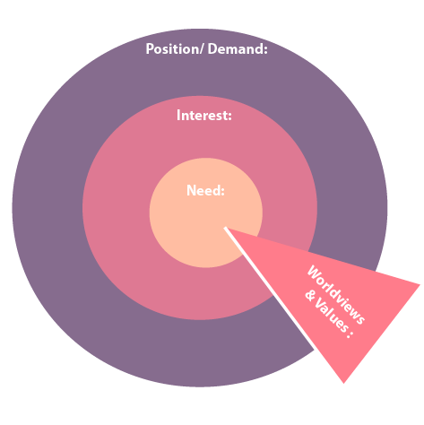
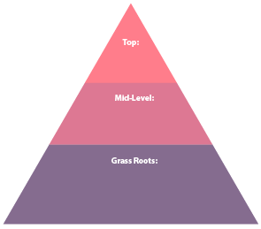

Introduction to Conflict Analysis
Conflict is normal. It is all around us. An interpersonal conflict about who should do the dishes can stop us in our tracks. So it is no wonder that more complex conflicts that are layered with issues of injustice, systemic oppression and prejudice can leave people asking 'where do I even start?'
This page explores three tools for stepping back from conflict, analyzing the dynamics and planning strategic actions. Each tool delves into different facets of conflict from individuals' interests and needs to identifying potential allies for collective action.
A key component of ethical conflict analysis is to do the work with people by inviting and including their opinions. If you are a visual person and if these tools resonate with you, try using them with others!
What do I need?
- An assortment of markers - multiple colors
- Large sheets of paper
- Some time to think on your own or with other people
- Microsoft Powerpoint or another software for making shapes if you want to have a professional-looking output
Why do this?
Conflict is overwhelming. These tools are methods for externalizing your thinking and engaging with others. Conflict analysis is a crucial first step toward taking action to promote justice.
Who is involved?
The Stakeholder Map
Identify the issue(s)
To make a stakeholder map, you have to first figure out the issue at hand. If you want to share the map and create space for dialogue, the issue needs to be articulated in a way that invites all of the parties into the conversation.
Identify the stakeholders (parties in the conflict)
The issue usually reveals the most immediate parties. If you want to make a more complete map, start by listing other parties that care about the issue and who might eventually enter into the conflict.
Placement and size
How much power does each party have in this situation? You can draw larger or smaller circles for each stakeholder to show different amounts of power or to allude to the size of their group. You can also put them in the center of the map or off to the side depending on their level of direct involvement in the conflict.
Describe the relationships
Take notes about the relationships among the parties. Which ones are friendly to one another? Which ones are in conflict with one another? Did some have a good relationship that is now broken?
Create your key
In theory, you can use any set of symbols you want as long as you put the key on the map. In practice, there are some protocols for mapping that are widely shared among peacebuilders. On our map, we have used the key from Working with Conflict : Skills and Strategies for Action (Fisher et al. p. 23).
Include yourself
When you are mapping a conflict as an outsider, it is important to include yourself on the map. Who are you in relation to these parties and their issues? What power do you have? How are you perceived by the parties? Regardless of your stated role, people in the conflict will perceive you a certain way based on your gender, race, class, accent, origins, or other identity features. Your behavior will also be scrutinized. Every time you do a conflict map, include yourself or your group because in doing this analysis, you have become a part of the conflict system.
No map can include everything
If the parties are unable or unwilling to map the conflict together, it is important for the conflict analyst to conduct interviews and create a map that brings together the various understandings. If a party cannot see themselves or their issues on the map, they won’t participate in any proposed process based on the findings.
Mapping over time
Maps are static. They represent a snapshot of a situation at one moment in an unfolding and dynamic conflict. It can be helpful to complete a series of maps to show how relationships and issues change over time.
What is going on with the parties? The Onion Model
The source
The Onion Model is featured in the book Working with Conflict: Skills and Strategies for Action (2000). Spearheaded by the organization Responding to Conflict, the contents of the book come from "... the collective wisdom and experience of some 300 practitioners from all over the world who have worked with Responding to Conflict (RTC) since 1991" (Fisher et al. p. xv). Authors Simon Fisher, Jawed Ludin, Sue and Steve Williams (see Journal 1 for more information on the Williams and Quaker contributions to the field of peacebuilding), Dekha Ibrahim Abdi and Richard Smith have lived and worked all over the globe. The resource book they created presents clear tech niques for analyzing conflicts while also provid ing real examples from Cambodia, Afghanistan, South Africa, Kenya, Northern Ireland and Colombia. "In each place these ideas and techniques have mutated in the light of local needs and circumstances, so that the contents of this book have been and still are in a constant state of change" (xv).
The layers
Like its namesake, the Onion Model has several layers: "The outer layer contains the positions that we take publicly, for all to see and hear. Underlying these are our interests - what we want to achieve from a particular situation. Finally, at the core are the most important needs we require to be satisfied. It is useful to carry out this Onion analysis for each of the parties involved" (Fisher et al. p. 27).
Some modifications
Not all conflicts are about interests. Our values regularly guide our positions. With this perspective in mind, Dr. Catherine Barnes has made two modifications to the Onion Model:
- Barnes added a wedge entitled “Worldviews and Values” that runs through each of the rings to support the idea that worldviews and values inform all the other dimensions; they are the foundational perceptions and beliefs that shape our goals, demands, interests and needs.
- Between the Position/Demand and Interests, Barnes has also added an ring for “Goal" since a party's end goal might be different from their stated position.
The instructions
This exercise takes empathy. Without judgment, try to consider each relevant party's needs, interests, positions and values.
Levels of power: the Pyramid
The source
John Paul Lederach articulated this tool in the 1990s. It is based on his many years of peacebuilding experience, specifically the Nicaraguan and Somali conflicts. Lederach reflects on watching top and grassroots level peacebuilding initiatives take place in isolation from one another (Sampson & Lederach 52).
The levels
In the book Into the Eye of the Storm, Lederach writes, “I usually start with a simple tool: a pyramid that looks at three levels of actors and activities in peacebuilding work, including ways in which they are vertically and horizontally connected...
- At the highest level is what is commonly referred to in the media as the peace process. This phrase, more often than not, references an official level of negotiations between well-known and visible leaders representing the government and potentially a series of opposition movements that have been in conflict.
- The middle-range level often involves activities of national networks and organizations and international nongovernmental agencies - sets of people who may have contacts and relationships with the official process but are more likely to be engaged with the development of civil society.
- At the bottom level are sets of people who are working with local grassroots and community-level initiatives, often connected to a particular geographical area within the setting,” (p. 38-9).
This tool has become widely accepted in the peacebuilding field, even in big organizations like the United Nations. Today it is taken for granted that there are multiple levels of people who can create change. The role of civil society in creating safer and more equitable communities is now being highlighted. The Pyramid remains relevant as peacebuilders consider how to engage parties horizontally and vertically.
Different forms of power
Despite appearances, each group has its own form of power. While groups at the top might be equiped with money and influence, groups at the bottom can have strong networks that can mobilize around an issue.
The value of relationships
This tool represents the value of relationships. For peacebuilding work to be effective, Lederach contends that peacebuilders must weave a network of people. This includes connections that run both vertically and horizontally.
The takeaway
The pyramid is about acknowledging the asymmetry between different actors but then affirming that all of these levels and all these people are important. We have to work with them all to cultivate sustainable peace.